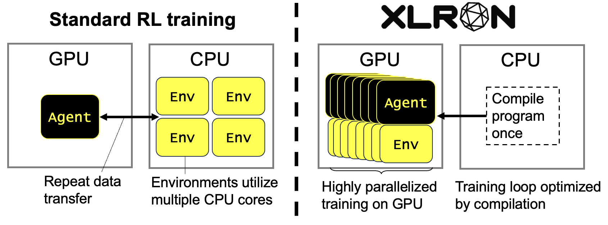
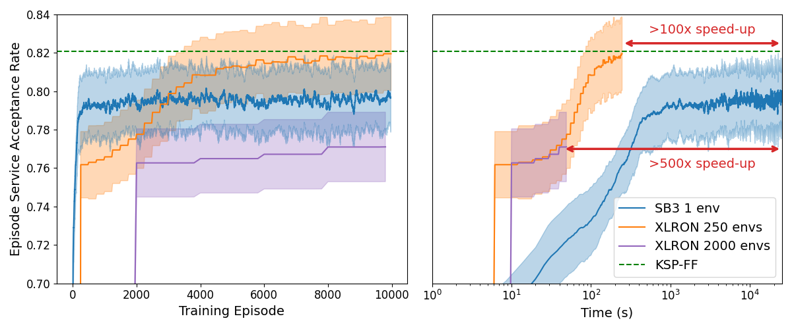
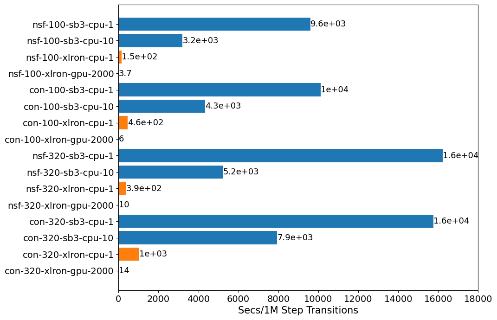
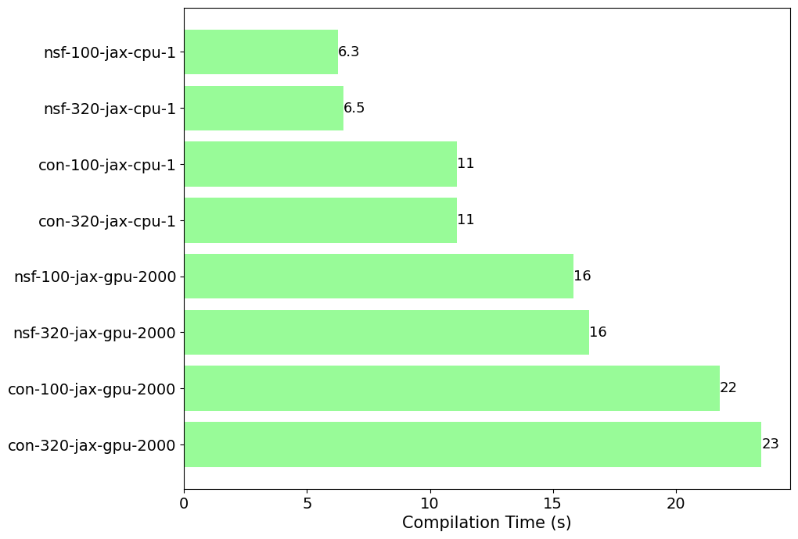

Welcome to XLRON's documentation!


XLRON ("ex-el-er-on") is an open-source research project that provides a suite of gym-style environments for simulating resource allocation problems in optical networks and applying reinforcement learning techniques. It is built on the JAX numerical computing framework, enabling accelerated training on GPU and TPU hardware.
XLRON is a product of my PhD research, which is focused on the application of Reinforcement Learning (RL) to a set of combinatorial optimisation problems that occur in resource allocation for in optical networks. The project is currently in active development.
Key Features
- Gym-style environments for optical network resource allocation problems (RWA, RSA, RMSA, RWA-LR, VONE, ...)
- Powered by JAX for accelerated training on GPU and TPU
- Command-line interface for running experiments with customisable hyperparameters
- Advanced deep learning architectures (GNN, GAT) and physical layer models (ISRS GN model).
- Implementations of heuristics (KSP-FF, etc.) for benchmarking and comparison.
- Ideal for research and innovation in optical network optimization.
🧠 Understanding XLRON 🧠
Check out this page to get a deeper understanding of XLRON's architecture and how it works.
XLRON is faster than CPU-based training because of the following factors:

- End-to-end JAX implementation (both environment and RL algorithm) allows entire training loop to be compiled and optimised as a single program
- GPU-compatiblity allows parallelisation to make maximum use of accelerator hardware (GPU or TPU)
- Running entirely on GPU avoids CPU-GPU data transfer bottleneck and eliminates any overhead from Python interpreter
To further understand the architecture of XLRON and how it allows distributed training for multiple environments across multiple devices and even for multiple learners (neural network parameters), take a look at the below diagram:

🏎️ Speed Benchmarks 🏎️
tldr: Expect approximately 500x speed-up! 🚀
For the comparisons shown, the CPU is 10-core Apple M1 Pro and the GPU is Nvidia A100.
Case study 1
To fairly assess the speed-up offered by XLRON, we implement a "DeepRMSA" environment and agent (exactly like in the canonical DeepRMSA paper) and compare with the equivalent example from optical-rl-gym, which uses stables_baselines3 (SB3) for training.
The below figure shows the training curves for both implementations, with 250 or 2000 parallel envs shown for XLRON. Shaded areas indicate the standard deviation of values across environments (each with a unique random seed) for XLRON and across 3 random seeds for SB3. The left figure shows the training progression with episode count, the right figure shows training progression with time on a log scale.

Increasing the number of parallel environments decreases the time required to train on a given number of environment steps, but changes the training dynamics so hyperparameters should be tuned accordingly for different numbers of parallel environments.
Case study 2
For the virtual optical network embedding problem, XLRON is compared with the environments from an ECOC 2023 paper (publication pending). The below figure compares the time it takes to train on 1M environment steps for two different topologies (NSFNET or CONUS) and either 100 or 320 frequency slot units (FSU) per link.
There are 4 horizontal bars per experiment:
- sb3 training with 1 vectorised environment on CPU
- sb3 training with 10 vectorised environments on CPU
- XLRON training with 1 vectorised environment on CPU
- XLRON training with 2000 vectorised environments on GPU
Experiment names on y-axis follow the naming convention: topology name (NSFNET or CONUS) - number of FSU per link - JAX or numpy environment - device type - number of vectorised environments.

Compilation times
See below figure for compilation times of different environments. Compilation typically takes a few seconds, therefore adds very little overhead to the training process.

Related work
The gym-style environments follow the example set in Gymnax
The PPO implementation in this project derives from the excellent PureJaxRL
Multi-device support takes inspiration from Stoix
Acknowledgements
This work was supported by the Engineering and Physical Sciences Research Council (EPSRC) grant EP/S022139/1 - the Centre for Doctoral Training in Connected Electronic and Photonic Systems - and EPSRC Programme Grant TRANSNET (EP/R035342/1)
Contact
If you have any questions or comments, please feel free to contact me at michael.doherty.21@ucl.ac.uk